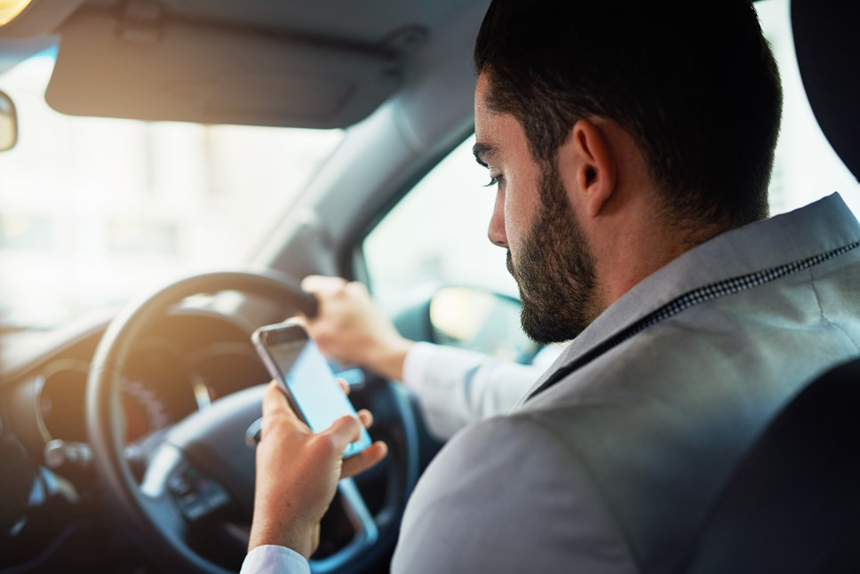
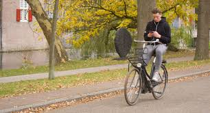
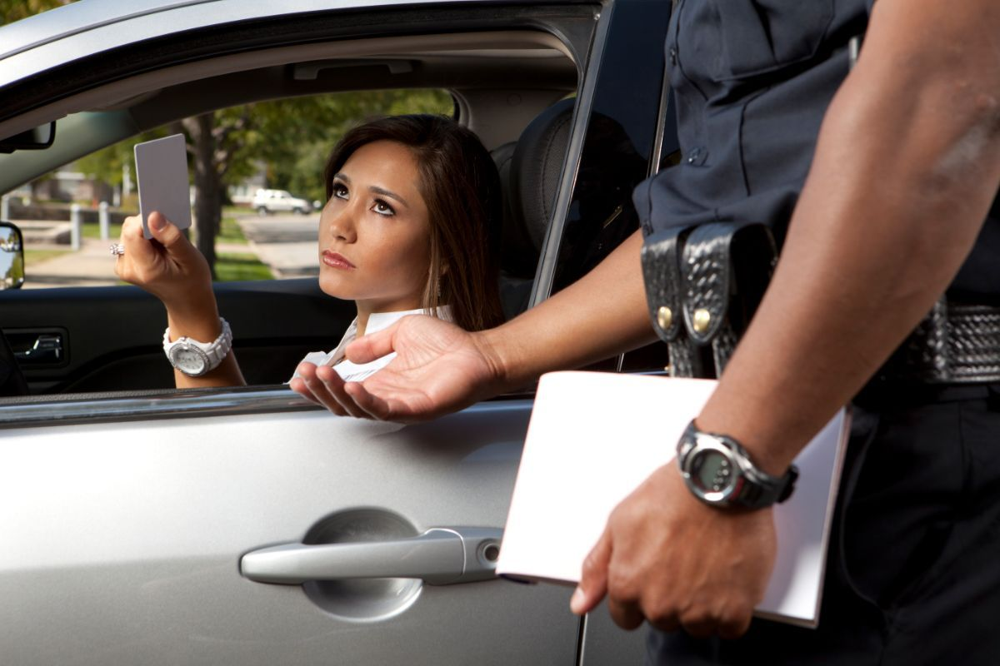

Why is Being Distracted by a Cellphone in Traffic a Problem?
Being distracted by your cellphone increases the risk of having an accident in traffic, especially when distracted for long periods. Using a cellphone while driving reduces your physical, visual, and mental attention to the road. Whether it's texting, calling, or even selecting a song, each distraction increases the chances of accidents.
According to research, 47% of a control group of 750 car drivers have used their cellphone at least once while driving. Of these, 12% have held their phones, and 35% used hands-free setups. Despite this, 96% of the drivers supported a nationwide ban on cellphone use while driving.
How is the Issue Already Being Addressed?
The issue of distracted driving is being tackled through legal measures and awareness campaigns. The Dutch government has implemented rules that allow cellphone use only through hands-free setups or when the vehicle is stationary. Additionally, cameras are being installed to detect cellphone use while driving. Violations carry hefty fines, such as:
- €430 for car and motorbike drivers
- €170 for cyclists
- €300 for moped riders
Awareness campaigns focus on educating the public through advertisements and promoting apps or settings that help limit distractions, such as auto-reply functions for messages or turning off notifications while driving.
Who is Most Often Involved in These Accidents?
Using a cellphone while driving increases the risk of accidents by up to 8 times compared to driving without distractions. In 2024, 45% of surveyed drivers admitted to using their phone while in traffic. Among them:
- 60% reported calling while driving
- 47% reported texting
- Almost 40% reported using apps
The group most at risk for accidents includes drivers aged 20 to 29, followed by teenagers aged 16 to 17. Interestingly, women tend to use their phones more often than men while driving, but men are more likely to be involved in accidents. Despite this, women tend to experience more severe accidents.
Survey Results
Our survey data reveals that:
- Many respondents believe using phones while driving is dangerous.
- Common distractions include notifications, calls, and messaging.
- Some drivers have been stopped by the police for phone use.
- Most respondents feel stricter regulations and awareness campaigns could help reduce phone-related accidents.